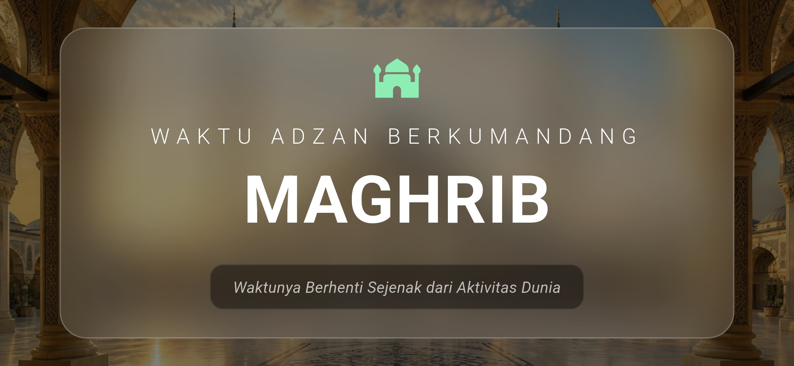
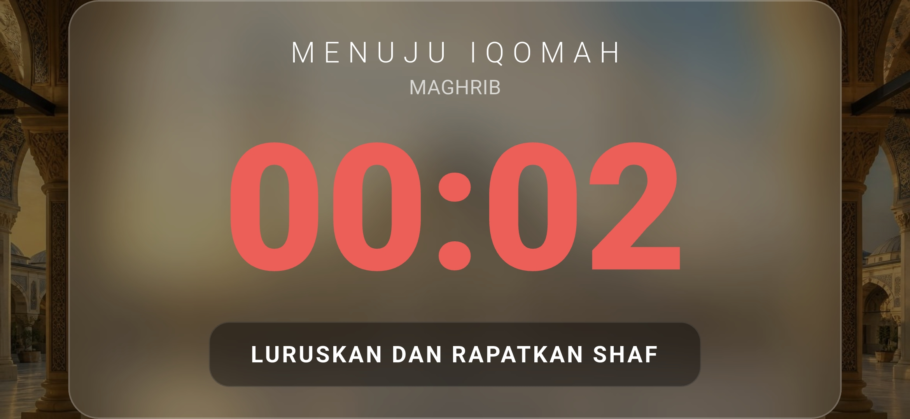
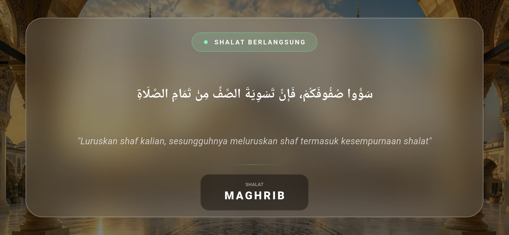
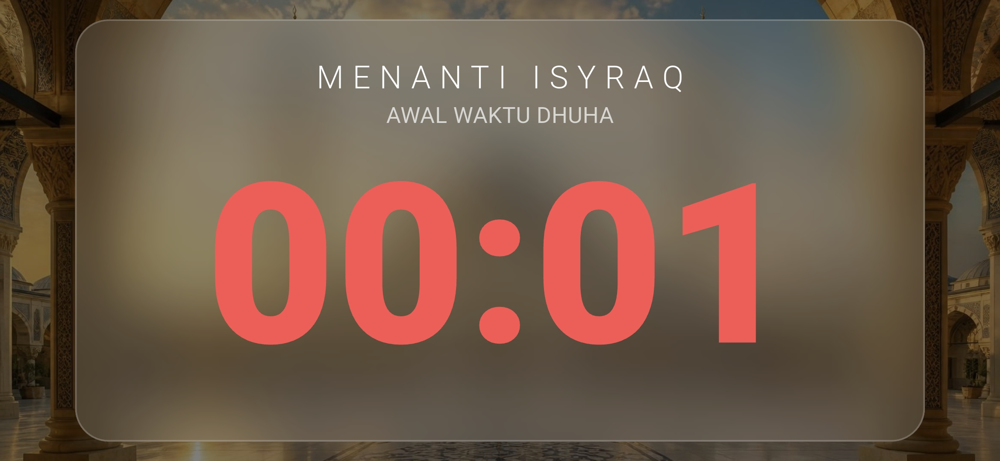
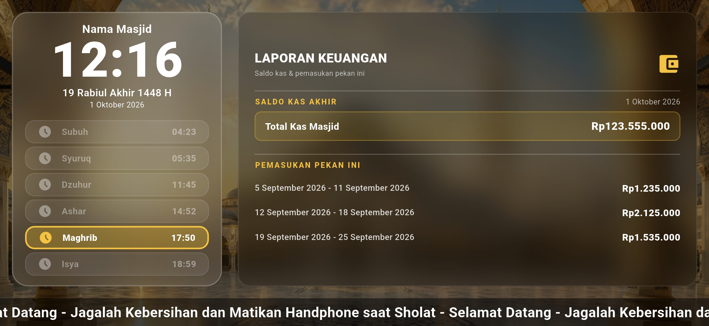
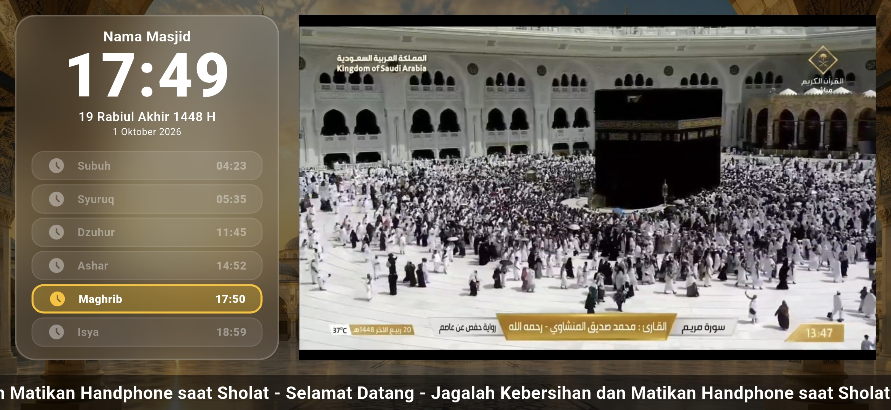

Fitur Unggulan
Semua kebutuhan display jadwal sholat masjid digital dalam satu aplikasi Android TV yang andal, akurat, dan mudah dikelola.
Jadwal sholat akurat
Dihitung di perangkat dengan metode Kemenag (20°/18°), Muhammadiyah (18°/18°), atau sudut kustom, plus ihtiyat dan koreksi elevasi.
Kalender Hijriah Umum & KHGT
Tanggal Hijriah dengan pilihan Kalender Hijriah Global Tunggal dan koreksi −2 sampai +2 hari.
Otomatis Adzan–Iqomah–Shalat
Transisi layar penuh tepat pada waktunya, lengkap dengan hitung mundur dan penanda waktu.
Layar Jumat & Isyraq
Alur khusus hari Jumat (tanpa iqomah) dan pengingat Isyraq setelah Syuruq.
Running text & latar kustom
Teks berjalan, latar belakang, dan hingga 10 gambar acara diputar otomatis di sela jadwal.
Laporan kas masjid
Saldo kas dan pemasukan pekan ini tampil sebagai kartu laporan keuangan.
Live Makkah
Siaran langsung Masjidil Haram menjelang Maghrib (butuh internet).
Multi-TV master–follower
Satu konfigurasi untuk banyak layar, tersinkron otomatis.
Atur dari browser
Pindai QR di layar TV, atur semuanya dari HP/laptop di Wi-Fi yang sama.
Tangkapan Layar
Dirancang kontras dan elegan untuk visibilitas maksimal di layar besar masjid pada setiap fase ibadah.






